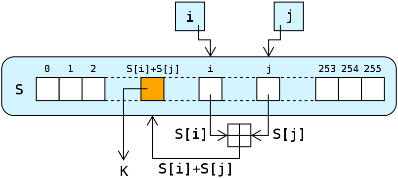

WEP is gone, but why?
Background
Wired Equivalent Privacy (WEP) was introduced in September 1999 as a part of the original IEEE 802.11 standard. The purpose of WEP was to provide data confidentiality similar to existing wired networks.1
WEP-x origins
The original standard was WEP-40; due to US government export restrictions on cryptographic technology, the key size was limited to 40-bits in the standard 64-bit WEP. In 2000, the US government export restrictions were lifted and WEP-104, a 128-bit system, was introduced by hardware manufacturers.
Superceding of WEP
In 2003, the Wi-Fi Alliance announced that WEP had been superceded by Wi-Fi Protected Access (WPA). In 2004, IEEE 802.11i introduced WPA2 and deprecated both WEP-40 and WEP-104, stating that they "fail to meet their security goals."2
Protocol
The RC4 stream cipher is used by WEP for confidentiality3, and the CRC-32 checksum provides data integrity4. For context, a stream cipher is a symmetric key cipher where plaintext digits are combined with a pseudorandom cipher digit stream (known as a keystream) to produce the wanted ciphertext. RC4 is a commonly used stream cipher and is widely used in such protocols as Transport Layer Security (TLS).
RC4 Lookup Stage, where S is a permutation of 256 possible bytes, i and j are two 8-bit index-pointers, and K is the keystream.
The WEP protocol consists of a 24-bit initialization vector (IV), which is pseudorandom, concatenated with a key to produce a seed for the RC4 stream cipher. Once the RC4 keystream is produced, it is XOR'd with the plaintext that is the target of encryption, and the cipher text is the result.
WEP comes in 3 flavors, WEP-40, WEP-104 and WEP-128. Each has a 24-bit IV, which only gives 224 = 16,777,216 possibilities. With a birthday attack this allows for a 50% chance of finding the correct IV by only guessing 1.1774 * √224 ≈ 4,823 24-bit combinations. This very small IV became one of the largest achillies heels of WEP
Standard 64-bit WEP (IEEE 802.11, or WEP-40), consists of the 24-bit IV concatenated with a 40-bit key, or 10 hexadecimal digits. Once the US government lifted export restrictions on cryptographic technologies, then WEP-104 was introduced with a 104-bit key, or 26 hexadecimal digits. In an attempt to add further security, some vendors provided WEP-232, with a 232-bit key, or 58 hexadecimal digits. All of these flavors however, all suffered from an equally short 24-bit IV.
Authentication
WEP can be used with two different types of authentication, open system and shared key.
Open System
With open system, a WLAN client does not need to have any credentials, allowing any client to authenticate and attempt to associate using only a MAC. This effectively provides zero authentication, and after association, WEP keys can be used to encrypt subsequent data frames.
Shared Key
With shared key, the WLAN client and access point (AP) share a key and authenticate through a 4-step challenge and response handshake. The WLAN client starts by sending an authentication request to the AP, and the AP responds by sending back an unencrypted cleartext challenge. The WLAN client then encrypts the cleartext challenge using its shared key and sends it back to the AP. Once the AP receives the encrypted response, it decryptes the message with its shared key and compares the resulting cleartext to the original cleartext challenge. If the cleartexts both match, then the AP sends back a positive reply and the WLAN client is free to associate with the AP.
At the face of it, shared key authentication seems like the more secure approach. However, the contrary is true, shared key authentication is more secure, because the keystream can be derived in shared key authentication by eavesdropping and collecting challenge frames sent between the WLAN client and the AP5. Shared key was eventually deprecated in favor of WPA/WPA2.
Exploits
There are several attack vectors for WEP. Because it is based on an RC4 stream cipher, the same traffic key cannot be reused securely. The cipher is seeded with an IV--transmitted as plain text--which is only 24 bits in the most common variation of WEP: not enough to be secure on a busy network. For a 24-bit IV, there is a 50 percent probability of repetition after only 5000 packets due to the birthday principle. The way the IV is utilized also opens WEP up to a related key attack, where a mathematical relationship between keys can be known to the attacker.
Other major issues include that the use of WEP is optional on most routers, so many installations don't even bother using it at all. Even if it is being used, the default implementation of WEP uses a single shared key among users which leads to issues dealing with compromises. Often compromises aren't dealt with at all.
Most attacks deal with issues due to the RC4 stream cipher utilization technique, but Bittau, Handley, and Lackey showed in 2006 that the 802.11 protocol can be used to enable attacks against WEP that weren't thought previously possible. Only a single packet needs to be eavesdropped before bootstrapping to arbitrary data.
RC4 based exploits
Most exploits are based on the RC4 stream itself. Fluhrer, Mantin and Shamir (FMS) found correlations between the RC4 keystream, IV, and shared key allowing a passive, eavesdropping based attack to recover the RC4 key. Depending on the amount of traffic on the network successful key recovery can take only a minute or so. A key element of this attack strategy is to stimulate the server by injecting packets, causing more traffic to be available to monitor them. This attack can be done easily with consumer hardware.
Improvements to FMS were made by Andreas Klein in 2005, showing that there are additional correlations in the RC4 stream cipher than FMS had found previously. This increases the ease of cracking the cipher.
Klein's attack was improved by Tews, Pychkine and Weinmann (TPW) in 2007, extending the capability of this attack method. The new implementation allows recovering a WEP-104 key with a high probability of 50% with only 40,000 packets, reaching 95% probability with only 95,000 packets.
aircrack-ng suite
Aircrack-ng is a WEP and WPA-PSK cracking suite that enables users to collect packets from a server and perform analysis to recover keys from stored packets. It is one of the fastest free, consumer WEP cracking tools, implementing the FMS attack mentioned above, albeit with optimizations including KoreK, and the PTW attack. Aircrack-ng is used by many security companies to audit wireless networks.At its simplest, aircrack-ng is intuitive and simply for power users. Assuming you are close enough to the access point to transmit and receive packets, the network has at least one client attached, your drivers are properly set up for injection, and you are using a current version of aircrack-ng, the process is simple to crack WEP. We will discuss the tool by walking through the process of cracking a simple WEP-40 connection.
airmon-ng
The first step is to set the wireless card into monitor mode on the channel of the AP you want to crack. Typically this is 6 if you are war driving, though you can check the channel of a particular network easily. First you must put down the network card with
airmon-ng stop (network interface)
Then you place the wireless card into monitor mode with
airmon-ng start (network interface) (AP channel)
airodump-ng
After the wireless card is prepared to monitor packets, you can start monitoring packets over the connection using airodump-ng. The syntax is
airodump-ng -c (AP channel) --bssid (BSSID of AP) -w (output filename) (network interface)Airodump in progress

aireplay-ng
After monitoring has started, packets are being collected. Given enough time this will likely be enough to collected sufficient packets for recovering the key, however this is not necessary. Typically while cracking you want to use aireplay-ng to get a fake authentication, which allows the hacking laptop to associate with the desired AP and have it accept packets. This gives more response packets from the server and allows for packet injection.
aireplay-ng -1 0 -e (ESSID of AP) -a (BSSID of AP) -h (MAC of network interface) (network interface)
After we have fake associated, everything is ready to begin packet injection. The easiest way to do this is when a client is currently on the access point, meaning that address resolution protocol (ARP) requests are being sent out from the server. ARP packets are ideal because the AP typically broadcasts them to build the ARP request result, simultaneously spawning a new IV for collection. We wait for ARP requests to come across the monitor, and then when we find one we inject it for more packets. There are also tricks for generating ARPs without a client present, but if conditions are met you can starting injecting using
aireplay-ng -3 -b (BSSID of AP) -h (MAC of network interface) (network interface)
aircrack-ng
After collecting enough IVs ("enough" depends on your attack strategy, but typically 50,000 may be enough) we can now obtain the WEP key directly. This is done using FMS or PTW implicitly through the aircrack-ng command. For PTW:
aircrack-ng -b (BSSID of AP) (output filename)*.cap
To use the FMS/KoreK method, you can start another console session and use
aircrack-ng -K -b (BSSID of AP) (output filename)*.cap
Aircrack with FMS works by using statistical correlations between the RC4
stream cipher and the key to "vote" on the probatility of specific bytes
being at certain positions in the shared key. This allows for a more
educated attack than brute force, in which keys are generated from high probability
bytes and tested against the target AP. In basic WEP configurations the
AP will NOT lock out the aircrack-ng instance, allowing this process to be
completed fairly quickly. Aircrack FMS in progress shows the keys being
tested.
 If everything has gone correctly to this point, you should get the key
as a result:
If everything has gone correctly to this point, you should get the key
as a result:

Remedies
Before settling on a new standard several remedies were considered for the issues involved in WEP.
WEPPlus
WEPPlus was a proprietary enhancement to WEP put forward by Agere Systems. WEPPlus avoids the usage of "weak IVs"6 that are more likely to leak key information, with the additional cost of both ends of a connection needing to support this very limited scope standard.
DynamicWEP
DynamicWEP combined 802.1x technology with the Extensible Authentication Protocol (EAP), which is still used for some authentication schemes in more modern WPAx installations. DynamicWEP uses an authentication token that allows changing WEP keys dynamically, a feature that was picked up in 802.11i as a part of TKIP but not ever officially a part of WEP, remaining a vendor specific feature.WEP2
WEP2 was designed for hardware incapable of supporting WPA/WPA2, basically being a stopgap measure. WEP2 extends both the IV and the key to 128-bits7, dramatically increasing the key space. WEP2 was never really produced since the entire WEP algorithm was found to be secure, not just the IV-stream correlation. Extending the key lengths was rolled into TKIP, just like EAP.Upgrade
The only real solution to WEP's inherent issues is to upgrade per IEEE 802.11i to WPA or WPA2. Note that WPA has been broken as well and WPA2 can be insecure in some instances, so even this is not a perfect solution. However they are considerably more difficult to crackWPA/WPA2
WPA
WPA was an intermediate solution designed for hardware incapable of supporting WPA2; basically WPA was a software implementable solution designed to replace WEP. WPA is based on the Temporary Key Integrity Protocol (TKIP), which has been replaced by AES in WPA due to being partially broken and deprecated.
WPA2
WPA2 is based on Robust Security Network (RSN), which provides two new protocols: a four-way handshake and a group handshake. In a four-way handshake, nonces--cryptographic numbers used only once in a communication to keep originality of messages intact--are exchanged along with Pairwise Transient Keys (PTK), Groupwise Transient Keys (GTK) and Message Integrity Codes (MIC).
WPA2's group handshake is utilized when the network timer expires, so the GTK needs to be updated. A two-way handshake is utilized instead of a four-way handshake, effectively the last two steps of the four-way handshake.
WPA2 is generally secure8, however it is important to note that there are other attack vectors than just the security method chosen. For example, routers that have WPS pin enabled are nearly completely insecured even if they are using WPA2.
References
[2] IEEE 802.11i-2004
[3] WPA Part 2: Weak IV's
[4] An Inductive Chosen Plaintext Attack against WEP/WEP2
[5] Intercepting Mobile Communications: The Insecurity of 802.11
[6] Agere Systems is First to Solve Wireless LAN Wired Equivalent Privacy Security Issue; New Software Prevents Creation of Weak WEP Keys.
[7] WEP2, Credibility Zero
[8] 802.11b Update: Stepping Up Your WLAN Security